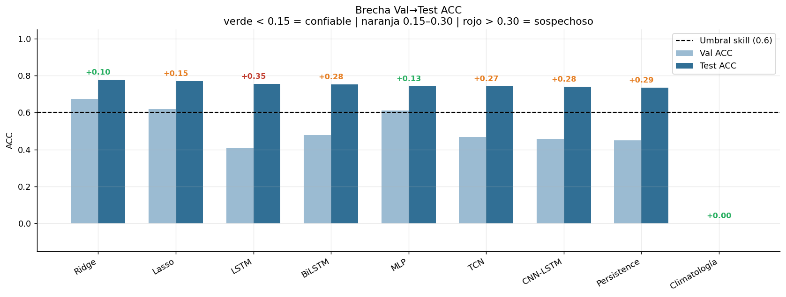
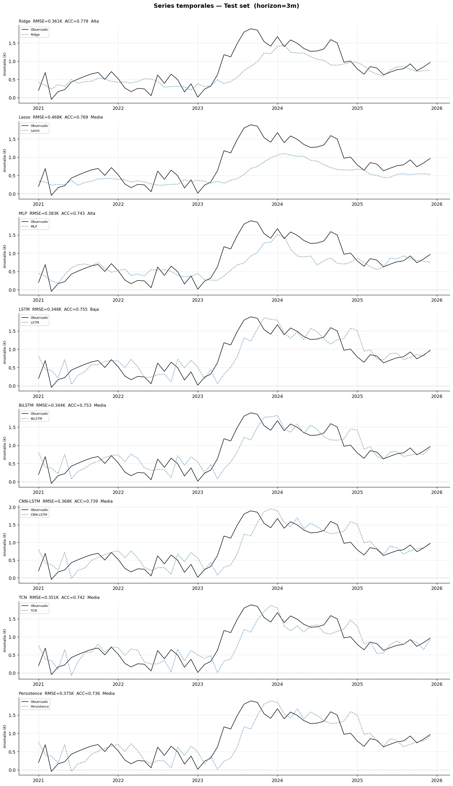
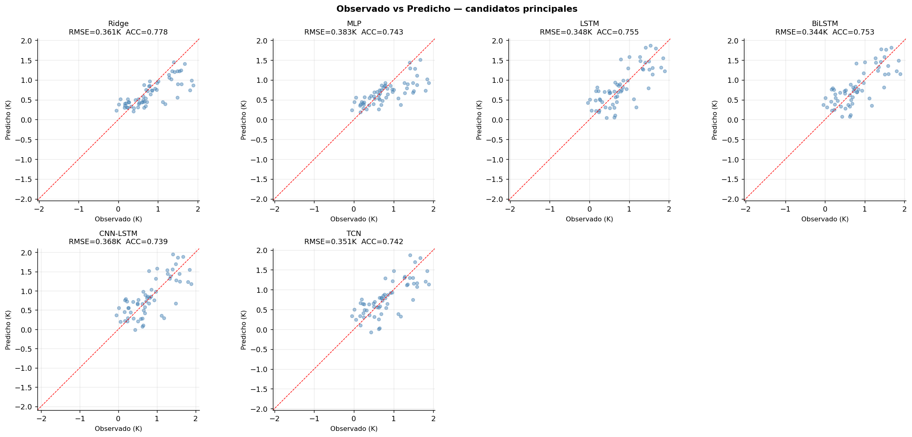
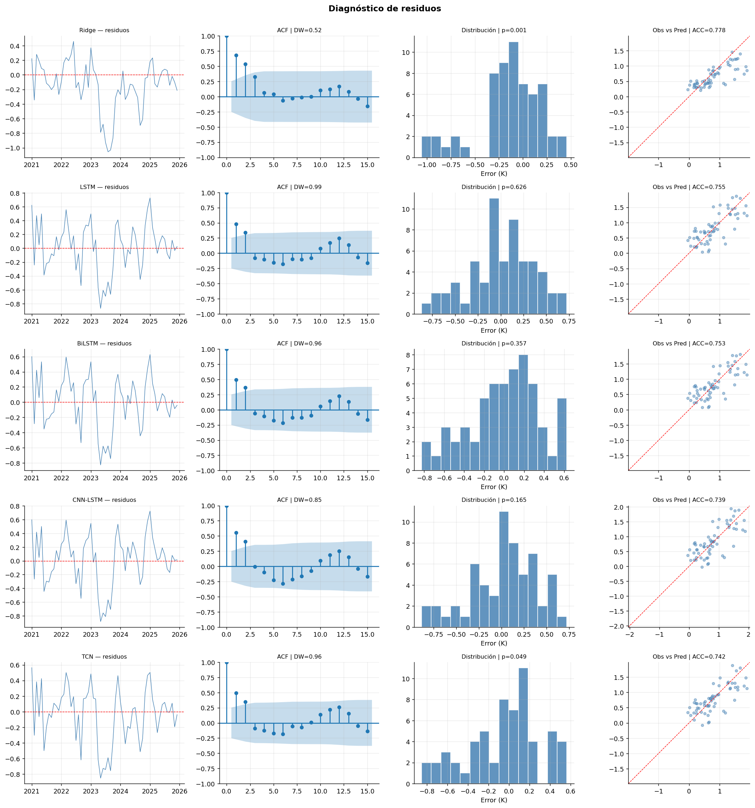
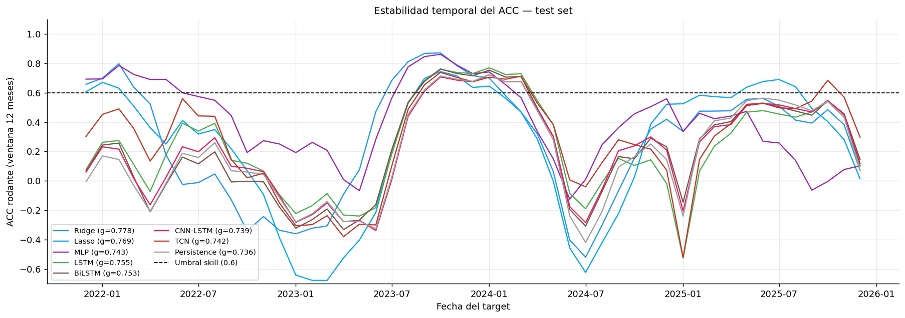
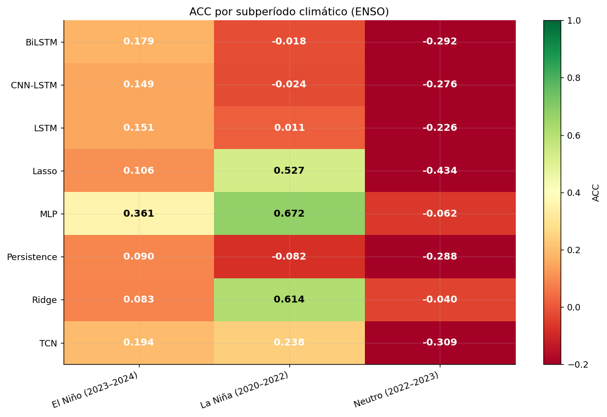
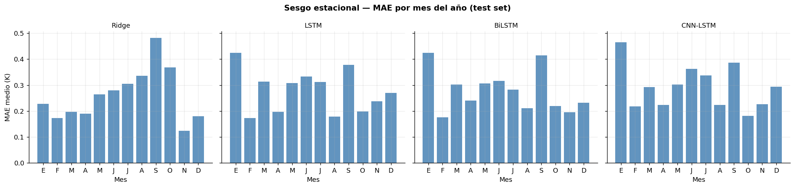

evaluation.ipynb — Evaluación post-benchmark ERA5 T2M · Caribe#
Pre-requisito: haber ejecutado preprocessing.ipynb y modeling.ipynb.
Sección |
Contenido |
|---|---|
1 |
Carga de artefactos y generación de predicciones |
2 |
Tabla maestra con IC bootstrap (ACC) y skill score |
3 |
Diagnóstico de brecha Val→Test |
4 |
Panel de series temporales — todos los modelos |
5 |
Scatter observado vs predicho — candidatos principales |
6 |
Diagnóstico de residuos — DW, normalidad, sesgo |
7 |
ACC rodante (12 meses) — estabilidad temporal |
8 |
Análisis por subperíodo climático (ENSO) |
9 |
Tests estadísticos de diferencia entre modelos |
10 |
Sesgo estacional por mes |
11 |
Resumen ejecutivo y recomendaciones |
0. Imports y rutas#
import os, json, pickle, warnings
warnings.filterwarnings("ignore")
os.environ["TF_CPP_MIN_LOG_LEVEL"] = "3"
os.environ["TF_ENABLE_ONEDNN_OPTS"] = "0"
import numpy as np
import pandas as pd
import matplotlib.pyplot as plt
import seaborn as sns
from pathlib import Path
from scipy import stats as sp_stats
from scipy.stats import ttest_rel
from statsmodels.stats.stattools import durbin_watson
from statsmodels.graphics.tsaplots import plot_acf
from sklearn.metrics import mean_squared_error, mean_absolute_error, r2_score
import tensorflow as tf
from tensorflow import keras
import xgboost as xgb
import warnings
warnings.filterwarnings("ignore")
SEED = 42
np.random.seed(SEED)
plt.rcParams.update({
"figure.dpi" : 130,
"axes.grid" : True,
"grid.alpha" : 0.25,
"axes.spines.top" : False,
"axes.spines.right": False,
})
PREP_DIR = Path("outputs_preprocessing")
MODELS_DIR = Path("outputs_models")
EVAL_DIR = Path("outputs_evaluation")
EVAL_DIR.mkdir(exist_ok=True)
assert PREP_DIR.exists(), f"Ejecutar preprocessing primero: {PREP_DIR}"
assert MODELS_DIR.exists(), f"Ejecutar modeling primero: {MODELS_DIR}"
print(f"TF: {tf.__version__} | XGB: {xgb.__version__}")
print(f"EVAL_DIR: {EVAL_DIR.resolve()}")
TF: 2.10.0 | XGB: 2.1.4
EVAL_DIR: C:\Users\Hp\Documents\Seminario\docs\outputs_evaluation
1. Carga de artefactos y predicciones#
# ── Artefactos del preprocesamiento ──────────────────────────────────────────
seqs = np.load(PREP_DIR / "sequences.npz", allow_pickle=True)
X_train = seqs["X_train"]; y_train = seqs["y_train"]
X_val = seqs["X_val"]; y_val = seqs["y_val"]
X_test = seqs["X_test"]; y_test = seqs["y_test"]
y_train_raw = seqs["y_train_raw"]
y_val_raw = seqs["y_val_raw"] # ← AGREGAR esta línea
y_test_raw = seqs["y_test_raw"]
y_train_diff = seqs["y_train_diff"]
y_val_diff = seqs["y_val_diff"]
y_test_diff = seqs["y_test_diff"]
y_train_base_raw = seqs["y_train_base_raw"]
y_val_base_raw = seqs["y_val_base_raw"]
y_test_base_raw = seqs["y_test_base_raw"]
td_train = pd.to_datetime(seqs["target_dates_train"])
td_val = pd.to_datetime(seqs["target_dates_val"])
td_test = pd.to_datetime(seqs["target_dates_test"])
with open(PREP_DIR / "scaler_X.pkl", "rb") as f: scaler_X = pickle.load(f)
with open(PREP_DIR / "scaler_y.pkl", "rb") as f: scaler_y = pickle.load(f)
with open(PREP_DIR / "pipeline_metadata.json") as f: META = json.load(f)
with open(PREP_DIR / "scaler_y_diff.pkl", "rb") as f: scaler_y_diff = pickle.load(f)
HORIZON = META["horizon"]
N_FEATURES = META["n_features"]
FEATURE_COLS = META["feature_cols"]
TARGET = META["target"]
with open(MODELS_DIR / "model_metadata.json") as f: META_MOD = json.load(f)
N_LAGS = META_MOD["n_lags_seq"]
INPUT_SEQ = tuple(META_MOD["input_shape_seq"])
df_mod = pd.read_csv(MODELS_DIR / "tabla_resultados.csv")
# ── Verificación crítica de consistencia ──────────────────────────────────────
npz_feats = X_train.shape[1]
model_feats = INPUT_SEQ[1] # (N_LAGS, N_FEATURES)
assert npz_feats == model_feats, (
f"MISMATCH: .npz tiene {npz_feats} features pero "
f"model_metadata espera {model_feats}. "
f"Re-ejecutar regenerar_npz_roni.py y modeling.ipynb en orden."
)
print(f"HORIZON : {HORIZON}m")
print(f"N_LAGS_SEQ : {N_LAGS}")
print(f"N_FEATURES : {N_FEATURES} ({'OK' if N_FEATURES == npz_feats else 'MISMATCH'})")
print(f"X_train : {X_train.shape} → {td_train[0].date()} — {td_train[-1].date()}")
print(f"X_val : {X_val.shape} → {td_val[0].date()} — {td_val[-1].date()}")
print(f"X_test : {X_test.shape} → {td_test[0].date()} — {td_test[-1].date()}")
HORIZON : 3m
N_LAGS_SEQ : 24
N_FEATURES : 44 (OK)
X_train : (465, 44) → 1977-04-01 — 2015-12-01
X_val : (60, 44) → 2016-01-01 — 2020-12-01
X_test : (60, 44) → 2021-01-01 — 2025-12-01
# ── Cargar modelos ────────────────────────────────────────────────────────────
def load_model(name):
keras_p = MODELS_DIR / f"{name.lower().replace('-','_')}.keras"
pkl_p = MODELS_DIR / f"{name.lower()}.pkl"
if keras_p.exists():
return keras.models.load_model(keras_p, compile=False), "keras"
if pkl_p.exists():
with open(pkl_p, "rb") as f: return pickle.load(f), "sklearn"
return None, None
DL_NAMES = {"LSTM", "BiLSTM", "CNN-LSTM", "TCN"}
TAB_NAMES = {"Ridge", "Lasso", "XGBoost", "MLP"}
modelos = {}
for nombre in list(TAB_NAMES) + list(DL_NAMES):
if nombre == "XGBoost":
p = MODELS_DIR / "xgboost.json"
if p.exists():
m = xgb.XGBRegressor(); m.load_model(str(p))
modelos[nombre] = (m, "sklearn")
else:
m, tipo = load_model(nombre)
if m: modelos[nombre] = (m, tipo)
print("Modelos cargados:")
for n, (_, t) in modelos.items():
print(f" {n:<20} [{t}]")
print("\nVerificación de input shapes:")
for nombre, (m, tipo) in modelos.items():
if tipo == "keras":
print(f" {nombre:<20} → {m.input_shape}")
else:
print(f" {nombre:<20} → sklearn ({tipo})")
Modelos cargados:
MLP [keras]
Ridge [sklearn]
Lasso [sklearn]
CNN-LSTM [keras]
BiLSTM [keras]
TCN [keras]
LSTM [keras]
Verificación de input shapes:
MLP → (None, 44)
Ridge → sklearn (sklearn)
Lasso → sklearn (sklearn)
CNN-LSTM → (None, 24, 44)
BiLSTM → (None, 24, 44)
TCN → (None, 24, 44)
LSTM → (None, 24, 44)
# ── Reconstruir secuencias DL (idéntico a modeling.ipynb) ─────────────────────
X_full = np.concatenate([X_train, X_val, X_test], axis=0)
y_full_diff = np.concatenate([y_train_diff, y_val_diff, y_test_diff], axis=0)
y_full_raw = np.concatenate([y_train_raw, y_val_raw, y_test_raw], axis=0)
y_full_base = np.concatenate([y_train_base_raw, y_val_base_raw,y_test_base_raw],axis=0)
n_tr_full = len(X_train)
n_va_full = len(X_train) + len(X_val)
def build_sequences(Xf, yf, n_lags, horizon):
Xo, yo, tidx = [], [], []
for i in range(len(Xf) - n_lags - horizon + 1):
Xo.append(Xf[i:i+n_lags])
yo.append(yf[i+n_lags+horizon-1])
tidx.append(i+n_lags+horizon-1)
return (np.array(Xo, np.float32),
np.array(yo, np.float32),
np.array(tidx))
X_seq, y_seq_diff, tidx = build_sequences(X_full, y_full_diff, N_LAGS, HORIZON)
mask_te = tidx >= n_va_full
X_te_seq = X_seq[mask_te]
y_te_seq = y_seq_diff[mask_te]
print(f"X_te_seq : {X_te_seq.shape} (secuencias DL, test)")
print(f"X_test : {X_test.shape} (tabular, test)")
X_te_seq : (60, 24, 44) (secuencias DL, test)
X_test : (60, 44) (tabular, test)
# Ejecutar en una celda nueva de cualquier notebook:
import numpy as np
from pathlib import Path
seqs = np.load("outputs_preprocessing/sequences.npz", allow_pickle=True)
print(f"X_train shape: {seqs['X_train'].shape}")
print(f"Claves disponibles: {sorted(seqs.files)}")
# Si dice (465, 40) → el .npz en disco es el viejo
# Si dice (465, 44) → el .npz es el nuevo con RONI
X_train shape: (465, 44)
Claves disponibles: ['X_test', 'X_train', 'X_val', 'target_dates_test', 'target_dates_train', 'target_dates_val', 'y_test', 'y_test_base_raw', 'y_test_diff', 'y_test_diff_raw', 'y_test_raw', 'y_train', 'y_train_base_raw', 'y_train_diff', 'y_train_diff_raw', 'y_train_raw', 'y_val', 'y_val_base_raw', 'y_val_diff', 'y_val_diff_raw', 'y_val_raw']
# ── Descalado ─────────────────────────────────────────────────────────────────
def descalar(y_sc):
return scaler_y.inverse_transform(
np.array(y_sc).reshape(-1,1)).ravel()
def descalar_diff(y_sc_diff):
return scaler_y_diff.inverse_transform(
np.array(y_sc_diff).reshape(-1,1)).ravel()
# ── Baselines ─────────────────────────────────────────────────────────────────
h = HORIZON
y_persist_test = np.concatenate([y_val[-h:], y_test[:-h]])[:len(y_test)]
y_zero_sc = scaler_y.transform(np.zeros((len(y_test),1))).ravel()
# ── preds[nombre] = (y_true_K, y_pred_K, td_eje) — todo en escala real (K) ──
preds = {}
preds["Persistence"] = (descalar(y_test), descalar(y_persist_test), td_test)
preds["Climatología"] = (descalar(y_test), descalar(y_zero_sc), td_test)
# ── Tabulares: predicen nivel directamente con scaler_y ───────────────────────
for nombre in TAB_NAMES:
if nombre not in modelos: continue
m, _ = modelos[nombre]
yp = m.predict(X_test).flatten()
preds[nombre] = (descalar(y_test), descalar(yp), td_test)
# ── DL: predicen Δy → reconstrucción base + diff ──────────────────────────────
for nombre in DL_NAMES:
if nombre not in modelos: continue
m, _ = modelos[nombre]
yp_diff_sc = m.predict(X_te_seq, verbose=0).flatten()
# Descalar la predicción diferencial
yp_diff = descalar_diff(yp_diff_sc)
# y_base: t2m(t) alineado con cada secuencia de test
y_base = y_full_base[tidx[mask_te]]
# Reconstruir anomalía absoluta predicha
yp_abs = y_base + yp_diff
# y_true: anomalía absoluta observada en t+3
yt_abs = y_full_raw[tidx[mask_te]]
# Fechas alineadas con las secuencias de test
n_dl = len(yp_abs)
t_dl = td_test[-n_dl:] if len(td_test) >= n_dl else pd.RangeIndex(n_dl)
preds[nombre] = (yt_abs, yp_abs, t_dl)
print("Predicciones listas:",
{k: len(v[0]) for k, v in preds.items()})
2/2 [==============================] - 1s 10ms/step
WARNING:tensorflow:5 out of the last 9 calls to <function Model.make_predict_function.<locals>.predict_function at 0x00000296594AF280> triggered tf.function retracing. Tracing is expensive and the excessive number of tracings could be due to (1) creating @tf.function repeatedly in a loop, (2) passing tensors with different shapes, (3) passing Python objects instead of tensors. For (1), please define your @tf.function outside of the loop. For (2), @tf.function has reduce_retracing=True option that can avoid unnecessary retracing. For (3), please refer to https://www.tensorflow.org/guide/function#controlling_retracing and https://www.tensorflow.org/api_docs/python/tf/function for more details.
Predicciones listas: {'Persistence': 60, 'Climatología': 60, 'MLP': 60, 'Ridge': 60, 'Lasso': 60, 'CNN-LSTM': 60, 'BiLSTM': 60, 'TCN': 60, 'LSTM': 60}
2. Funciones de métricas#
def acc_score(yt, yp):
a = yt - yt.mean(); b = yp - yp.mean()
return float(np.sum(a*b)/(np.sqrt(np.sum(a**2)*np.sum(b**2))+1e-10))
def full_metrics(yt, yp):
return {
"RMSE": float(np.sqrt(mean_squared_error(yt, yp))),
"MAE" : float(mean_absolute_error(yt, yp)),
"R2" : float(r2_score(yt, yp)),
"ACC" : acc_score(yt, yp),
"Bias": float((yp-yt).mean()),
}
def bootstrap_ci_acc(yt, yp, n=1000, seed=42):
rng = np.random.default_rng(seed); ns = len(yt)
accs = []
for _ in range(n):
idx = rng.integers(0, ns, ns)
accs.append(acc_score(yt[idx], yp[idx]))
return tuple(np.percentile(accs, [2.5, 97.5]))
def safe_taxis(nombre, n):
"""Eje temporal seguro: siempre len==n."""
t = preds[nombre][2]
if isinstance(t, pd.DatetimeIndex) and len(t) >= n:
return t[:n]
return np.arange(n)
print("Métricas definidas")
Métricas definidas
3. Tabla maestra con IC bootstrap y skill score#
yt_pers, yp_pers, _ = preds["Persistence"]
acc_pers = acc_score(yt_pers, yp_pers)
rows = []
for nombre, (yt_r, yp_r, _) in preds.items():
m = full_metrics(yt_r, yp_r)
lo, hi = bootstrap_ci_acc(yt_r, yp_r)
ss = 1.0 - (1.0 - m["ACC"]) / (1.0 - acc_pers + 1e-10)
fam = ("Baseline" if nombre in {"Persistence","Climatología"}
else "Tabular" if nombre in TAB_NAMES
else "DL-Sec.")
rows.append({
"Modelo" : nombre,
"Familia" : fam,
"RMSE (K)" : round(m["RMSE"], 4),
"MAE (K)" : round(m["MAE"], 4),
"R²" : round(m["R2"], 4),
"ACC" : round(m["ACC"], 4),
"IC 95% ACC" : f"[{lo:.3f}, {hi:.3f}]",
"Skill vs Persistence": round(ss, 4),
"Sesgo (K)" : round(m["Bias"], 4),
})
df_eval = (pd.DataFrame(rows)
.sort_values("ACC", ascending=False)
.reset_index(drop=True))
df_eval.to_csv(EVAL_DIR / "metricas_test.csv", index=False)
df_eval
| Modelo | Familia | RMSE (K) | MAE (K) | R² | ACC | IC 95% ACC | Skill vs Persistence | Sesgo (K) | |
|---|---|---|---|---|---|---|---|---|---|
| 0 | Ridge | Tabular | 0.3610 | 0.2604 | 0.5032 | 0.7783 | [0.683, 0.861] | 0.1612 | -0.1462 |
| 1 | Lasso | Tabular | 0.4677 | 0.3641 | 0.1660 | 0.7695 | [0.668, 0.855] | 0.1278 | -0.3004 |
| 2 | LSTM | DL-Sec. | 0.3481 | 0.2768 | 0.5379 | 0.7553 | [0.649, 0.834] | 0.0741 | 0.0131 |
| 3 | BiLSTM | DL-Sec. | 0.3441 | 0.2766 | 0.5484 | 0.7529 | [0.646, 0.830] | 0.0649 | 0.0015 |
| 4 | MLP | Tabular | 0.3830 | 0.2816 | 0.4407 | 0.7433 | [0.644, 0.829] | 0.0286 | -0.1427 |
| 5 | TCN | DL-Sec. | 0.3514 | 0.2749 | 0.5292 | 0.7420 | [0.636, 0.822] | 0.0239 | -0.0394 |
| 6 | CNN-LSTM | DL-Sec. | 0.3684 | 0.2927 | 0.4826 | 0.7388 | [0.624, 0.824] | 0.0118 | 0.0190 |
| 7 | Persistence | Baseline | 0.3746 | 0.2936 | 0.4649 | 0.7357 | [0.618, 0.823] | 0.0000 | -0.0168 |
| 8 | Climatología | Baseline | 0.9622 | 0.8161 | -2.5301 | 0.0000 | [0.000, 0.000] | -2.7839 | -0.8146 |
4. Diagnóstico de brecha Val→Test#
Cruza las métricas de Val de modeling.ipynb con las de Test calculadas aquí.
Brecha > 0.15 en ACC → sobreajuste o dependencia del período de test.
df_gap = df_mod[["Modelo","Val-ACC","Val-RMSE (K)",
"Test-RMSE (K)","Test-ACC"]].copy()
df_gap = df_gap.merge(
df_eval[["Modelo","ACC","Sesgo (K)"]].rename(
columns={"ACC":"Test-ACC-eval"}),
on="Modelo", how="inner"
)
df_gap["Brecha Val→Test"] = (df_gap["Test-ACC-eval"]-df_gap["Val-ACC"]).round(4)
def clasificar(b):
if abs(b) < 0.15: return "Alta"
if abs(b) < 0.30: return "Media"
return "Baja"
df_gap["Confiabilidad"] = df_gap["Brecha Val→Test"].apply(clasificar)
df_gap = df_gap.sort_values("Test-ACC-eval", ascending=False).reset_index(drop=True)
df_gap.to_csv(EVAL_DIR / "brecha_val_test.csv", index=False)
print(df_gap[["Modelo","Test-ACC-eval",
"Brecha Val→Test","Confiabilidad","Sesgo (K)"]].to_string(index=False))
Modelo Test-ACC-eval Brecha Val→Test Confiabilidad Sesgo (K)
Ridge 0.7783 0.1033 Alta -0.1462
Lasso 0.7695 0.1502 Media -0.3004
LSTM 0.7553 0.3492 Baja 0.0131
BiLSTM 0.7529 0.2759 Media 0.0015
MLP 0.7433 0.1324 Alta -0.1427
TCN 0.7420 0.2735 Media -0.0394
CNN-LSTM 0.7388 0.2805 Media 0.0190
Persistence 0.7357 0.2858 Media -0.0168
Climatología 0.0000 0.0000 Alta -0.8146
# Visualización brecha
orden = df_gap["Modelo"].tolist()
val_acc = df_gap["Val-ACC"].values
test_acc = df_gap["Test-ACC-eval"].values
brechas = df_gap["Brecha Val→Test"].values
x = np.arange(len(orden)); w = 0.35
fig, ax = plt.subplots(figsize=(13, 5))
ax.bar(x - w/2, val_acc, w, label="Val ACC", color="#90b4ce", alpha=0.9)
ax.bar(x + w/2, test_acc, w, label="Test ACC", color="#1a5f8a", alpha=0.9)
for i, (va, te, br) in enumerate(zip(val_acc, test_acc, brechas)):
col = ("#c0392b" if abs(br) >= 0.30 else
"#e67e22" if abs(br) >= 0.15 else "#27ae60")
ax.annotate(f"{br:+.2f}", xy=(x[i], max(va,te)+0.02),
ha="center", va="bottom", fontsize=9,
fontweight="bold", color=col)
ax.axhline(0.6, color="black", linestyle="--", linewidth=1.2,
label="Umbral skill (0.6)")
ax.set_xticks(x); ax.set_xticklabels(orden, rotation=30, ha="right")
ax.set_ylabel("ACC"); ax.set_ylim(-0.15, 1.05)
ax.set_title("Brecha Val→Test ACC\n"
"verde < 0.15 = confiable | naranja 0.15–0.30 | rojo > 0.30 = sospechoso")
ax.legend()
plt.tight_layout()
plt.savefig(EVAL_DIR / "brecha_val_test.png", dpi=150)
plt.show()

Podemos observar que entre val y test los modelos benchmark entrenados pudieron elevar su ACC entre val y test, LSTM de una manera bastante mas marcada que el resto, por lo que se debe analizar casos de ese estilo
5. Panel de series temporales#
panel = [n for n in ["Ridge","Lasso","XGBoost","MLP",
"LSTM","StackedLSTM","BiLSTM","CNN-LSTM","TCN",
"Persistence"] if n in preds]
conf_map = dict(zip(df_gap["Modelo"], df_gap["Confiabilidad"]))
color_conf = {"Alta ":"#2980b9", "Media ⚠":"#e67e22", "Baja ✗":"#c0392b"}
fig, axes = plt.subplots(len(panel), 1,
figsize=(14, 3.0*len(panel)), sharex=False)
for ax, nombre in zip(axes, panel):
yt_r, yp_r, _ = preds[nombre]
n = min(len(yt_r), len(yp_r))
t = safe_taxis(nombre, n)
a = acc_score(yt_r[:n], yp_r[:n])
r = float(np.sqrt(mean_squared_error(yt_r[:n], yp_r[:n])))
col = color_conf.get(conf_map.get(nombre,""), "steelblue")
ax.plot(t, yt_r[:n], color="black", linewidth=1.1, label="Observado")
ax.plot(t, yp_r[:n], color=col, linewidth=1.0,
linestyle="--", label=nombre, alpha=0.85)
ax.axhline(0, color="gray", linewidth=0.5, linestyle=":")
ax.set_ylabel("Anomalía (K)", fontsize=8)
ax.set_title(f"{nombre} RMSE={r:.3f}K ACC={a:.3f} "
f"{conf_map.get(nombre,'')}", fontsize=9, loc="left")
ax.legend(fontsize=7, loc="upper left")
fig.suptitle(f"Series temporales — Test set (horizon={HORIZON}m)",
fontsize=13, fontweight="bold", y=1.001)
plt.tight_layout()
plt.savefig(EVAL_DIR / "series_temporales_panel.png",
dpi=120, bbox_inches="tight")
plt.show()

6. Scatter observado vs predicho — candidatos principales#
candidatos = [n for n in ["Ridge","XGBoost","MLP",
"LSTM","BiLSTM","CNN-LSTM","TCN"]
if n in preds]
ncols = min(4, len(candidatos))
nrows = (len(candidatos) + ncols - 1) // ncols
fig, axes = plt.subplots(nrows, ncols,
figsize=(4.5*ncols, 4.2*nrows), squeeze=False)
for ax, nombre in zip(axes.ravel(), candidatos):
yt_r, yp_r, _ = preds[nombre]
n = min(len(yt_r), len(yp_r))
a = acc_score(yt_r[:n], yp_r[:n])
r = float(np.sqrt(mean_squared_error(yt_r[:n], yp_r[:n])))
lim = max(abs(yt_r[:n]).max(), abs(yp_r[:n]).max()) * 1.08
ax.scatter(yt_r[:n], yp_r[:n], alpha=0.45, s=18, color="steelblue")
ax.plot([-lim,lim], [-lim,lim], "r--", linewidth=0.8)
ax.set_xlim(-lim,lim); ax.set_ylim(-lim,lim); ax.set_aspect("equal")
ax.set_xlabel("Observado (K)", fontsize=9)
ax.set_ylabel("Predicho (K)", fontsize=9)
ax.set_title(f"{nombre}\nRMSE={r:.3f}K ACC={a:.3f}", fontsize=10)
for ax in axes.ravel()[len(candidatos):]:
ax.set_visible(False)
fig.suptitle("Observado vs Predicho — candidatos principales",
fontsize=12, fontweight="bold")
plt.tight_layout()
plt.savefig(EVAL_DIR / "scatter_obs_pred.png", dpi=150)
plt.show()

7. Diagnóstico de residuos — DW, normalidad, sesgo#
diag_nombres = [n for n in ["Ridge","XGBoost","LSTM",
"BiLSTM","CNN-LSTM","TCN"]
if n in preds]
rows_dw = []
fig, axes = plt.subplots(len(diag_nombres), 4,
figsize=(17, 3.5*len(diag_nombres)))
for i, nombre in enumerate(diag_nombres):
yt_r, yp_r, _ = preds[nombre]
n = min(len(yt_r), len(yp_r))
yt = yt_r[:n]; yp = yp_r[:n]; res = yp - yt
dw = durbin_watson(res)
_, p_norm = sp_stats.shapiro(res[:min(len(res), 500)])
sesgo = float(res.mean())
rows_dw.append({
"Modelo" : nombre,
"DW" : round(dw, 3),
"Autocorr" : "Alta" if dw < 1.5 else ("Media" if dw < 1.8 else "Baja"),
"p_norm" : round(p_norm, 4),
"Normal(5%)" : "Sí" if p_norm > 0.05 else "No",
"Sesgo (K)" : round(sesgo, 4),
})
t_ax = safe_taxis(nombre, n)
axes[i,0].plot(t_ax, res, linewidth=0.8, color="steelblue")
axes[i,0].axhline(0, color="red", linewidth=0.8, linestyle="--")
axes[i,0].set_title(f"{nombre} — residuos", fontsize=9)
plot_acf(res, lags=min(20, n//4), ax=axes[i,1], alpha=0.05)
axes[i,1].set_title(f"ACF | DW={dw:.2f}", fontsize=9)
axes[i,2].hist(res, bins=15, color="steelblue", edgecolor="white", alpha=0.85)
axes[i,2].set_title(f"Distribución | p={p_norm:.3f}", fontsize=9)
axes[i,2].set_xlabel("Error (K)")
lim = max(abs(yt).max(), abs(yp).max()) * 1.05
axes[i,3].scatter(yt, yp, alpha=0.45, s=16, color="steelblue")
axes[i,3].plot([-lim,lim], [-lim,lim], "r--", linewidth=0.8)
axes[i,3].set_xlim(-lim,lim); axes[i,3].set_ylim(-lim,lim)
axes[i,3].set_aspect("equal")
axes[i,3].set_title(f"Obs vs Pred | ACC={acc_score(yt,yp):.3f}", fontsize=9)
print(f"{nombre:15s} DW={dw:.3f} p_norm={p_norm:.3f} "
f"sesgo={sesgo:+.4f}K "
f"{'autocorr ALTA' if dw < 1.5 else 'DW OK'}")
plt.suptitle("Diagnóstico de residuos",
fontsize=13, fontweight="bold", y=1.001)
plt.tight_layout()
plt.savefig(EVAL_DIR / "diagnostico_residuos.png",
dpi=120, bbox_inches="tight")
plt.show()
df_dw = pd.DataFrame(rows_dw)
df_dw.to_csv(EVAL_DIR / "diagnostico_residuos.csv", index=False)
df_dw
Ridge DW=0.517 p_norm=0.001 sesgo=-0.1462K autocorr ALTA
LSTM DW=0.988 p_norm=0.626 sesgo=+0.0131K autocorr ALTA
BiLSTM DW=0.959 p_norm=0.357 sesgo=+0.0015K autocorr ALTA
CNN-LSTM DW=0.845 p_norm=0.165 sesgo=+0.0190K autocorr ALTA
TCN DW=0.958 p_norm=0.049 sesgo=-0.0394K autocorr ALTA

| Modelo | DW | Autocorr | p_norm | Normal(5%) | Sesgo (K) | |
|---|---|---|---|---|---|---|
| 0 | Ridge | 0.517 | Alta | 0.0007 | No | -0.1462 |
| 1 | LSTM | 0.988 | Alta | 0.6260 | Sí | 0.0131 |
| 2 | BiLSTM | 0.959 | Alta | 0.3566 | Sí | 0.0015 |
| 3 | CNN-LSTM | 0.845 | Alta | 0.1655 | Sí | 0.0190 |
| 4 | TCN | 0.958 | Alta | 0.0489 | No | -0.0394 |
8. ACC rodante (12 meses) — estabilidad temporal#
def rolling_acc(yt, yp, window=12):
out = [np.nan] * (window-1)
for i in range(window-1, len(yt)):
out.append(acc_score(yt[i-window+1:i+1], yp[i-window+1:i+1]))
return np.array(out)
PALETTE = {
"Ridge":"#2196F3", "Lasso":"#03A9F4", "XGBoost":"#FF9800", "MLP":"#9C27B0",
"LSTM":"#4CAF50", "StackedLSTM":"#009688", "BiLSTM":"#795548",
"CNN-LSTM":"#E91E63", "TCN":"#c0392b", "Persistence":"#9E9E9E",
}
fig, ax = plt.subplots(figsize=(14, 5))
for nombre, color in PALETTE.items():
if nombre not in preds: continue
yt_r, yp_r, _ = preds[nombre]
n = min(len(yt_r), len(yp_r))
ra = rolling_acc(yt_r[:n], yp_r[:n], window=12)
t = safe_taxis(nombre, n)
ax.plot(t, ra, label=f"{nombre} (g={acc_score(yt_r[:n],yp_r[:n]):.3f})",
color=color, linewidth=1.3)
ax.axhline(0.6, color="black", linestyle="--", linewidth=1.0,
label="Umbral skill (0.6)")
ax.axhline(0.0, color="lightgray", linewidth=0.6)
ax.set_ylabel("ACC rodante (ventana 12 meses)")
ax.set_xlabel("Fecha del target")
ax.set_title("Estabilidad temporal del ACC — test set", fontsize=11)
ax.legend(fontsize=8, loc="lower left", ncol=2)
ax.set_ylim(-0.7, 1.1)
plt.tight_layout()
plt.savefig(EVAL_DIR / "rolling_acc.png", dpi=150)
plt.show()

Estabilidad temporal del ACC — Evaluación en test set
La figura muestra la evolución del Anomaly Correlation Coefficient (ACC) en una ventana rodante de 12 meses para distintos modelos, evaluados sobre el test set. Esta métrica permite analizar no solo el rendimiento promedio, sino también la consistencia temporal de cada modelo bajo diferentes condiciones del sistema.
Comportamiento general
Se observa una alta variabilidad temporal del ACC en todos los modelos, con periodos de buen desempeño (ACC > 0.6) y caídas pronunciadas incluso a valores negativos.
El umbral de habilidad (ACC = 0.6) sirve como referencia para identificar fases donde los modelos tienen capacidad predictiva útil.
Existen regímenes temporales claros, donde la mayoría de modelos mejoran o empeoran simultáneamente, sugiriendo cambios estructurales en la dinámica del sistema.
Modelos de Deep Learning
CNN-LSTM y TCN muestran un comportamiento relativamente competitivo, con picos de desempeño similares a los mejores benchmarks.
LSTM y BiLSTM presentan trayectorias más suaves, pero tienden a mantenerse ligeramente por debajo de los modelos más complejos.
En general, los modelos deep learning capturan bien los periodos favorables, pero también son sensibles a caídas abruptas en fases difíciles.
Benchmarks lineales
Ridge y Lasso destacan por alcanzar los valores más altos en algunos periodos, especialmente en fases de alta predictibilidad.
Sin embargo, también exhiben caídas más profundas, lo que indica menor robustez frente a cambios de régimen.
Su comportamiento sugiere que capturan bien relaciones lineales dominantes, pero fallan cuando la dinámica se vuelve más compleja.
Otros modelos
MLP muestra una gran variabilidad, con picos altos pero también caídas frecuentes, lo que sugiere inestabilidad en la generalización.
Persistence actúa como baseline, manteniéndose consistentemente por debajo del umbral de habilidad en la mayoría de periodos.
Conclusiones
No existe un modelo dominante en todo el horizonte temporal; el rendimiento es altamente dependiente del régimen.
Los modelos híbridos (CNN-LSTM, TCN) ofrecen un mejor balance entre pico de desempeño y estabilidad.
Los benchmarks lineales siguen siendo competitivos en ciertos periodos, validando su uso como referencia.
La variabilidad observada justifica el uso de estrategias más avanzadas como ensembles o regime-switching, capaces de adaptarse dinámicamente a las condiciones del sistema.
Este análisis resalta la importancia de evaluar modelos no solo por métricas agregadas, sino también por su comportamiento a lo largo del tiempo.
9. Análisis por subperíodo climático (ENSO)#
# Ajusta estas fechas según tu test set real
subperiodos = {
"La Niña (2020–2022)" : ("2020-09", "2022-03"),
"Neutro (2022–2023)" : ("2022-04", "2023-05"),
"El Niño (2023–2024)" : ("2023-06", "2024-12"),
}
# ── CAMBIO: agregar TCN y MLP ─────────────────────────────────────────────────
sub_nombres = [n for n in ["Ridge", "Lasso", "XGBoost", "MLP",
"LSTM", "BiLSTM", "CNN-LSTM", "TCN", "Persistence"]
if n in preds]
# el resto de la celda queda exactamente igual
rows_sub = []
for nombre in sub_nombres:
yt_r, yp_r, t_ax_raw = preds[nombre]
n = min(len(yt_r), len(yp_r))
if (not isinstance(t_ax_raw, pd.DatetimeIndex)
or len(t_ax_raw) < n):
continue
t_idx = t_ax_raw[:n]
for periodo, (t0, t1) in subperiodos.items():
mask = (t_idx >= t0) & (t_idx <= t1)
if mask.sum() < 3: continue
rows_sub.append({
"Modelo" : nombre,
"Período": periodo,
"n" : int(mask.sum()),
"RMSE" : round(float(np.sqrt(mean_squared_error(
yt_r[:n][mask], yp_r[:n][mask]))), 4),
"ACC" : round(acc_score(yt_r[:n][mask], yp_r[:n][mask]), 4),
})
if rows_sub:
df_sub = pd.DataFrame(rows_sub)
df_sub.to_csv(EVAL_DIR / "metricas_subperiodos.csv", index=False)
pivot = df_sub.pivot_table(index="Modelo", columns="Período",
values="ACC").round(3)
fig, ax = plt.subplots(figsize=(10, max(3, len(pivot)*0.7+1)))
data = pivot.values
im = ax.imshow(data, aspect="auto", cmap="RdYlGn", vmin=-0.2, vmax=1.0)
ax.set_xticks(range(len(pivot.columns)))
ax.set_xticklabels(pivot.columns, rotation=20, ha="right")
ax.set_yticks(range(len(pivot.index)))
ax.set_yticklabels(pivot.index)
for r in range(data.shape[0]):
for c in range(data.shape[1]):
v = data[r,c]
ax.text(c, r, f"{v:.3f}", ha="center", va="center",
fontsize=11, fontweight="bold",
color="white" if v < 0.3 else "black")
plt.colorbar(im, ax=ax, label="ACC")
ax.set_title("ACC por subperíodo climático (ENSO)", fontsize=12)
plt.tight_layout()
plt.savefig(EVAL_DIR / "heatmap_subperiodos.png", dpi=150)
plt.show()
print(pivot.to_string())
else:
print(f"Sin superposición entre td_test ({td_test[0].date()}–{td_test[-1].date()})")
print("y los subperíodos definidos. Ajusta las fechas de 'subperiodos' arriba.")

Período El Niño (2023–2024) La Niña (2020–2022) Neutro (2022–2023)
Modelo
BiLSTM 0.179 -0.018 -0.292
CNN-LSTM 0.149 -0.024 -0.276
LSTM 0.151 0.011 -0.226
Lasso 0.106 0.527 -0.434
MLP 0.361 0.672 -0.062
Persistence 0.090 -0.082 -0.288
Ridge 0.083 0.614 -0.040
TCN 0.194 0.238 -0.309
ACC por subperíodo climático (ENSO)
La figura presenta el desempeño de los modelos en términos de ACC (Anomaly Correlation Coefficient) segmentado por fases del fenómeno ENSO: El Niño, La Niña y condiciones Neutras. Este análisis permite evaluar cómo cambia la habilidad predictiva según el régimen climático dominante.
El Niño (2023–2024)
Desempeño moderado y relativamente homogéneo entre modelos.
MLP (0.361) destaca claramente como el mejor en este régimen.
Modelos deep learning (LSTM, CNN-LSTM, BiLSTM) muestran valores similares (~0.15–0.18), sin gran diferenciación.
Ridge y Lasso presentan menor desempeño, sugiriendo que relaciones lineales capturan menos señal en esta fase.
La Niña (2020–2022)
Es el régimen con mejor predictibilidad general.
MLP (0.672) y Ridge (0.614) lideran ampliamente.
Lasso (0.527) también muestra buen desempeño, consolidando la efectividad de modelos lineales en este periodo.
Modelos deep learning tienen resultados cercanos a cero o negativos, indicando dificultades para capturar la dinámica dominante.
Neutro (2022–2023)
Régimen más difícil y menos predecible, con ACC negativo en casi todos los modelos.
Ridge (-0.040) y MLP (-0.062) son los menos afectados, aunque sin alcanzar habilidad positiva.
Modelos deep learning (CNN-LSTM, BiLSTM, TCN) presentan caídas más pronunciadas (< -0.25).
Esto sugiere una mayor complejidad o ausencia de señal clara en condiciones neutras.
Conclusiones clave
La habilidad predictiva depende fuertemente del régimen ENSO, evidenciando no estacionariedad en el sistema.
La Niña ofrece condiciones más favorables para la predicción, especialmente para modelos lineales.
El Niño favorece modelos más flexibles como MLP.
Condiciones neutras representan el mayor desafío para todos los enfoques.
No existe un modelo universalmente óptimo, lo que respalda el uso de enfoques adaptativos como ensembles dependientes del régimen.
Este análisis refuerza la importancia de incorporar información climática (como ENSO) en el diseño y selección de modelos predictivos.
10. Tests estadísticos — ¿las diferencias son significativas?#
pares = [(a,b) for a,b in [
("Ridge","LSTM"), ("Ridge","BiLSTM"), ("Ridge","CNN-LSTM"),
("Ridge","TCN"), ("Ridge","XGBoost"), ("Ridge","Persistence"),
("LSTM","BiLSTM"),("BiLSTM","CNN-LSTM"),("CNN-LSTM","TCN"),
] if a in preds and b in preds]
print(f"{'Comparación':<30} {'t':>7} {'p':>9} {'Sig':>5} Mejor")
print("-"*68)
rows_t = []
for m1, m2 in pares:
yt1,yp1,_ = preds[m1]; yt2,yp2,_ = preds[m2]
n = min(len(yt1),len(yp1),len(yt2),len(yp2))
e1 = np.abs(yp1[:n]-yt1[:n])
e2 = np.abs(yp2[:n]-yt2[:n])
t_s, p_v = ttest_rel(e1, e2)
sig = "***" if p_v<0.01 else "**" if p_v<0.05 else "*" if p_v<0.10 else "ns"
best = m1 if e1.mean() < e2.mean() else m2
lbl = f"{m1} vs {m2}"
print(f" {lbl:<28} {t_s:+7.3f} {p_v:9.4f} {sig:>5} → {best}")
rows_t.append({"Par":lbl,"t":round(t_s,3),"p":round(p_v,4),"Sig":sig,"Mejor":best})
print("\n *** p<0.01 ** p<0.05 * p<0.10 ns = no significativo")
pd.DataFrame(rows_t).to_csv(EVAL_DIR / "tests_estadisticos.csv", index=False)
Comparación t p Sig Mejor
--------------------------------------------------------------------
Ridge vs LSTM -0.543 0.5889 ns → Ridge
Ridge vs BiLSTM -0.610 0.5443 ns → Ridge
Ridge vs CNN-LSTM -1.059 0.2937 ns → Ridge
Ridge vs TCN -0.548 0.5856 ns → Ridge
Ridge vs Persistence -1.122 0.2666 ns → Ridge
LSTM vs BiLSTM +0.024 0.9808 ns → BiLSTM
BiLSTM vs CNN-LSTM -1.742 0.0868 * → BiLSTM
CNN-LSTM vs TCN +1.191 0.2382 ns → TCN
*** p<0.01 ** p<0.05 * p<0.10 ns = no significativo
11. Sesgo estacional — MAE por mes del año#
estac_nombres = [n for n in ["Ridge","XGBoost","LSTM","BiLSTM","CNN-LSTM"]
if n in preds]
fig, axes = plt.subplots(1, len(estac_nombres),
figsize=(4.2*len(estac_nombres), 4), sharey=True)
if len(estac_nombres) == 1: axes = [axes]
meses_lbl = ["E","F","M","A","M","J","J","A","S","O","N","D"]
for ax, nombre in zip(axes, estac_nombres):
yt_r, yp_r, t_raw = preds[nombre]
n = min(len(yt_r), len(yp_r))
if (not isinstance(t_raw, pd.DatetimeIndex) or len(t_raw) < n):
ax.set_title(f"{nombre}\n(sin índice de fechas)"); continue
t_idx = pd.DatetimeIndex(t_raw[:n])
err = np.abs(yp_r[:n] - yt_r[:n])
meses = t_idx.month
mae_m = [err[meses==m].mean() if (meses==m).any() else np.nan
for m in range(1,13)]
ax.bar(range(1,13), mae_m, color="steelblue", alpha=0.85)
ax.set_xticks(range(1,13)); ax.set_xticklabels(meses_lbl)
ax.set_title(nombre, fontsize=10); ax.set_xlabel("Mes")
axes[0].set_ylabel("MAE medio (K)")
fig.suptitle("Sesgo estacional — MAE por mes del año (test set)",
fontsize=12, fontweight="bold")
plt.tight_layout()
plt.savefig(EVAL_DIR / "sesgo_estacional.png", dpi=150)
plt.show()

12. Resumen ejecutivo#
df_resumen = df_eval.merge(
df_gap[["Modelo","Val-ACC","Brecha Val→Test","Confiabilidad"]], on="Modelo", how="left"
).merge(
df_dw[["Modelo","DW","Autocorr"]], on="Modelo", how="left"
)
df_resumen.to_csv(EVAL_DIR / "resumen_ejecutivo.csv", index=False)
print("="*72)
print(" RESUMEN EJECUTIVO — Evaluación ERA5 T2M Caribe")
print(f" horizon={HORIZON}m | n_lags_seq={N_LAGS}")
print(f" Test: {td_test[0].date()} → {td_test[-1].date()}")
print("="*72)
aptos = df_resumen[
(df_resumen["Confiabilidad"].isin(["Alta","Media"])) &
(df_resumen["ACC"] > 0.6)
].sort_values("ACC", ascending=False)
print("\nMODELOS CON SKILL OPERACIONAL (ACC>0.6, confiabilidad ≥ Media):")
for _, row in aptos.iterrows():
dw_s = f" DW={row['DW']:.2f}" if pd.notna(row.get("DW")) else ""
print(f"{row['Modelo']:<18} ACC={row['ACC']:.3f} {row['IC 95% ACC']}"
f" RMSE={row['RMSE (K)']:.3f}K {row['Confiabilidad']}{dw_s}")
excluir = df_resumen[
(df_resumen["Confiabilidad"]=="Baja ✗") | (df_resumen["ACC"]<=0.6)
]
print("\nMODELOS A EXCLUIR:")
for _, row in excluir.iterrows():
why = []
if row["ACC"] <= 0.6: why.append(f"ACC={row['ACC']:.3f}")
if row["Confiabilidad"]=="Baja": why.append(f"Brecha={row['Brecha Val→Test']:+.2f}")
print(f" {row['Modelo']:<18} {' | '.join(why)}")
print("\nHALLAZGOS DW:")
alta_ac = df_dw[df_dw["Autocorr"]=="Alta"]["Modelo"].tolist()
if alta_ac:
print(f" Autocorrelación residual alta en: {alta_ac}")
print(f" Causa probable: ventana ciega de {HORIZON}m")
print(f" Solución: añadir y(t-1)…y(t-{HORIZON}) como features")
print("\nARCHIVOS GENERADOS:")
for fp in sorted(EVAL_DIR.iterdir()):
print(f" {fp.name}")
print("="*72)
========================================================================
RESUMEN EJECUTIVO — Evaluación ERA5 T2M Caribe
horizon=3m | n_lags_seq=24
Test: 2021-01-01 → 2025-12-01
========================================================================
MODELOS CON SKILL OPERACIONAL (ACC>0.6, confiabilidad ≥ Media):
Ridge ACC=0.778 [0.683, 0.861] RMSE=0.361K Alta DW=0.52
Lasso ACC=0.769 [0.668, 0.855] RMSE=0.468K Media
BiLSTM ACC=0.753 [0.646, 0.830] RMSE=0.344K Media DW=0.96
MLP ACC=0.743 [0.644, 0.829] RMSE=0.383K Alta
TCN ACC=0.742 [0.636, 0.822] RMSE=0.351K Media DW=0.96
CNN-LSTM ACC=0.739 [0.624, 0.824] RMSE=0.368K Media DW=0.85
Persistence ACC=0.736 [0.618, 0.823] RMSE=0.375K Media
MODELOS A EXCLUIR:
Climatología ACC=0.000
HALLAZGOS DW:
Autocorrelación residual alta en: ['Ridge', 'LSTM', 'BiLSTM', 'CNN-LSTM', 'TCN']
Causa probable: ventana ciega de 3m
Solución: añadir y(t-1)…y(t-3) como features
ARCHIVOS GENERADOS:
brecha_val_test.csv
brecha_val_test.png
diagnostico_residuos.csv
diagnostico_residuos.png
heatmap_subperiodos.png
metricas_subperiodos.csv
metricas_test.csv
resumen_ejecutivo.csv
rolling_acc.png
scatter_obs_pred.png
series_temporales_panel.png
sesgo_estacional.png
tests_estadisticos.csv
========================================================================